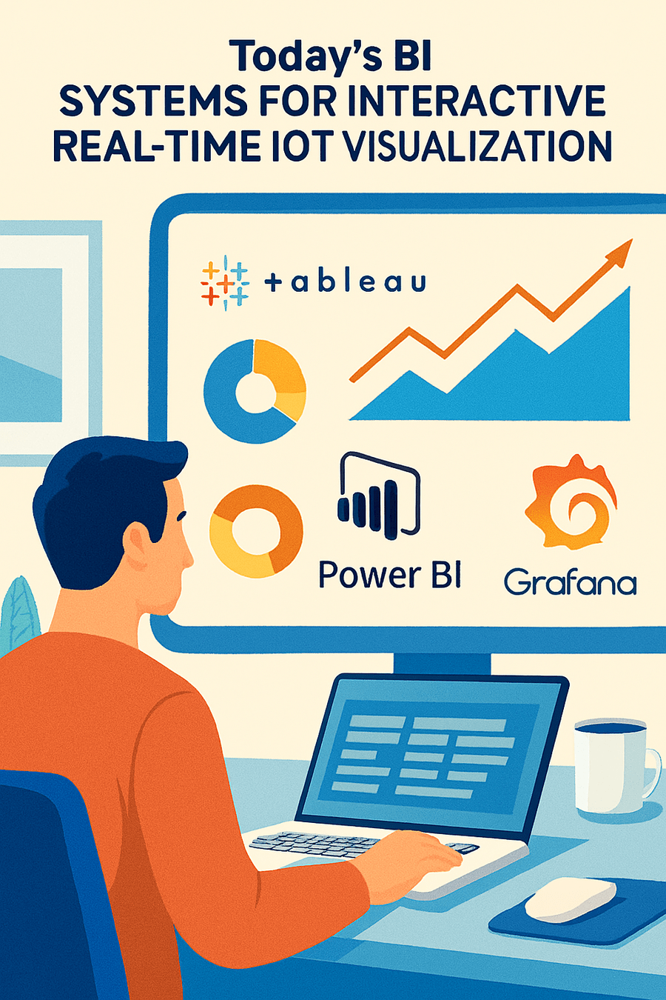
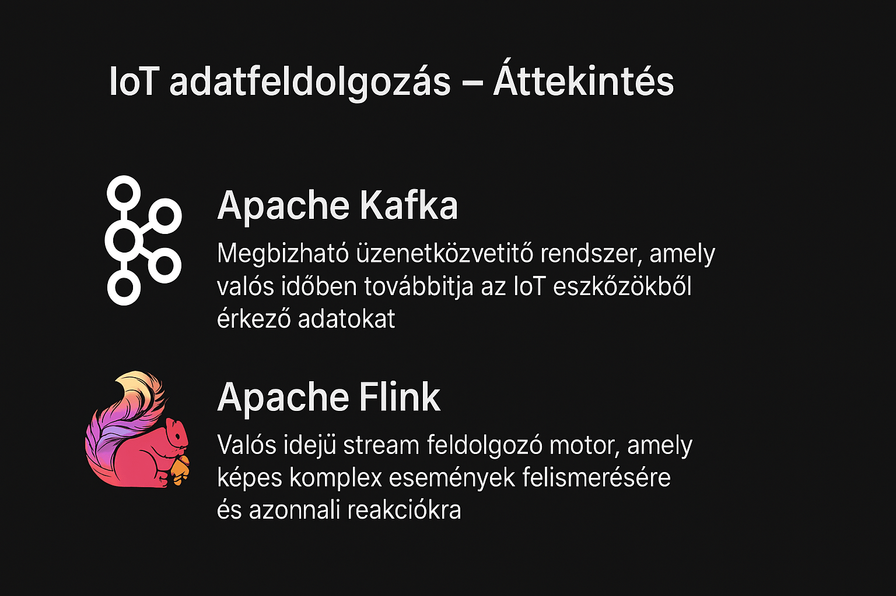
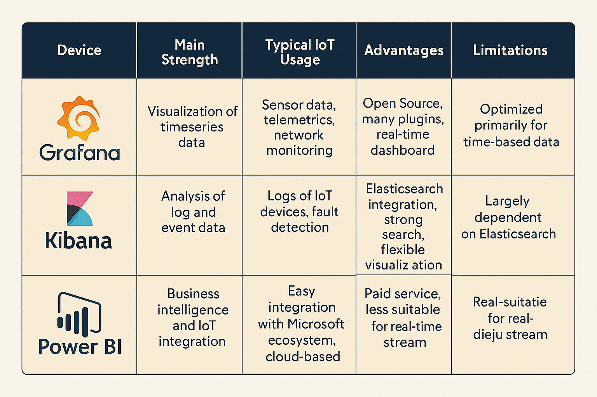
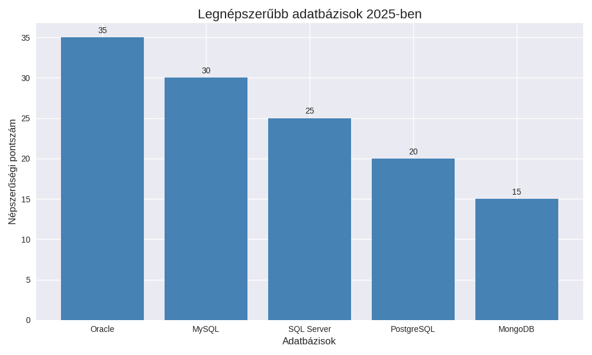
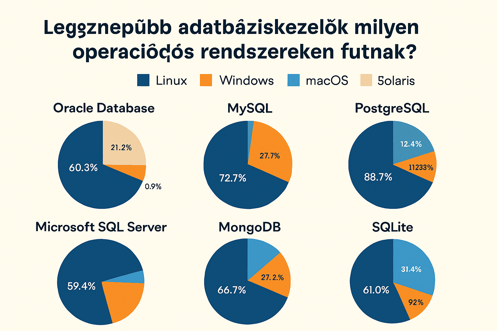
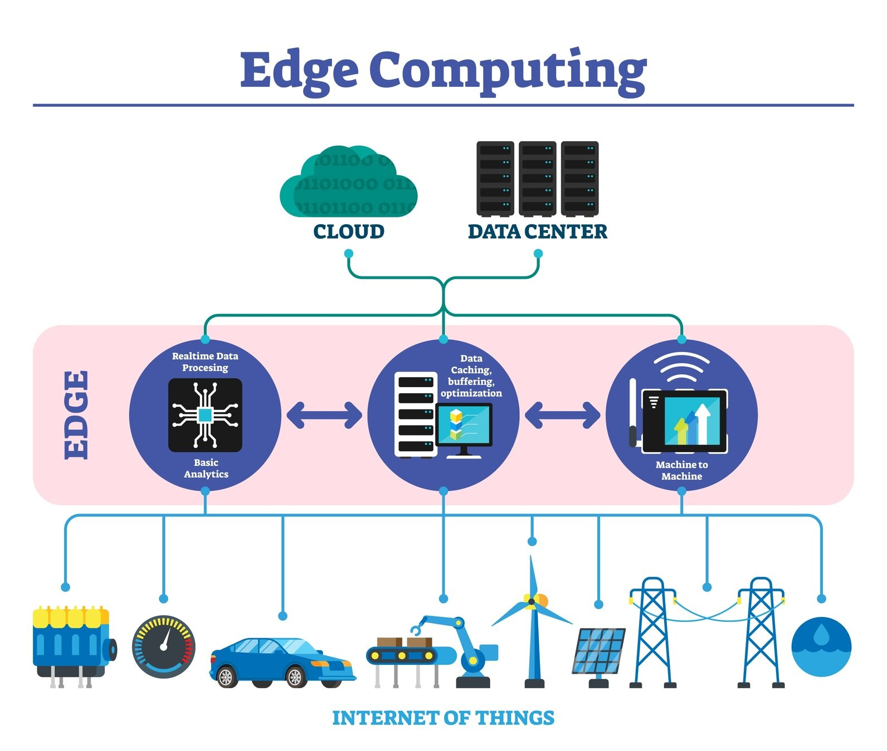

Az első adatvizualizációk a földrajzi információk ábrázolására szolgáltak
William Playfair bevezette a vonal- és oszlopdiagramokat, amelyek a gazdasági adatokat tették érthetővé.
A számítógépek megjelenésével interaktív grafikonok és dashboardok születtek.
BI rendszerek (Tableau, Power BI, Grafana) valós idejű, interaktív vizualizációt kínálnak, amelyek az IoT adatokat is képesek kezelni

IoT eszközök (pl. hőmérséklet-, páratartalom-, mozgásérzékelők) rengeteg zajos adatot gyűjtenek. Ezeket először tisztítani kell, hogy a hibás vagy irreleváns értékek ne torzítsák az elemzést
Az adatok összevonása időintervallumok vagy események alapján (pl. percenkénti átlaghőmérséklet)
Normalizálás, formátumok egységesítése, hogy az analitikai rendszerek könnyen feldolgozhassák.
Megbízható üzenetközvetítő rendszer, amely valós időben továbbítja az IoT eszközökből érkező adatokat.
Valós idejű stream feldolgozó motor, amely képes komplex események felismerésére és azonnali reakciókra

| Eszköz | Fő fókusz | Erősségek |
|---|---|---|
| Grafana | Idősoros adatok | Nyílt forrás, real-time dashboard |
| Kibana | Logelemzés | Elastic integráció, keresés |
| Power BI | Üzleti BI | MS ökoszisztéma, integráció |
| Tableau | Interaktív BI | Vizualizáció minőség |
| D3.js | Webes grafika | Maximális testreszabás |

Környezeti adatok (hőmérséklet, páratartalom, mozgás) gyűjtésére
Az eszközök által gyűjtött adatokat továbbítják a felhőbe vagy helyi szerverekre.
IBM által fejlesztett vizuális programozási eszköz, amely összekapcsolja az IoT eszközöket és vizualizációs platformokat
Az eszközök által gyűjtött adatokat továbbítják a felhőbe vagy helyi szerverekre.
| Adatbázis | Típus | OS támogatás |
|---|---|---|
| Oracle | Relációs | Linux, Windows, UNIX |
| MySQL | Relációs | Linux, Windows, macOS |
| SQL Server | Relációs | Windows, Linux |
| PostgreSQL | Relációs | Linux, Windows, macOS |
| MongoDB | NoSQL | Linux, Windows, macOS |



A data scientist (magyarul adattudós) olyan szakember, aki nagy mennyiségű adatot elemez, hogy segítsen a vállalatoknak jobb üzleti döntéseket hozni
. Matematikai, statisztikai és programozási tudását felhasználva gyűjti, tisztítja és elemzi az adatokat, gépi tanulási modelleket épít, és előrejelzéseket készít, a trendeket pedig vizualizálja.